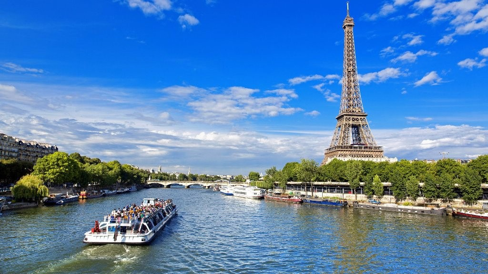
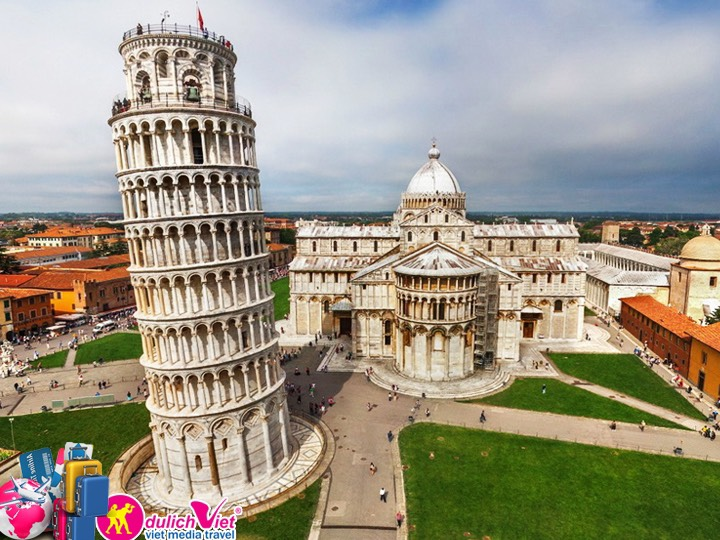

Du Lịch Châu Âu [Pháp - Thụy Sỹ - Ý]
Tour này có gì hay
- Hành trình du lịch qua các thành phố danh tiếng của Châu u và trải nghiệm nhiều khoảnh khắc thú vị cùng PHONEIX.
- Chiêm ngưỡng các công trình kiến trúc nổi tiếng và các chứng tích lịch sử cổ kính như tháp Eiffel, Nhà Thờ Đức Bà, Bảo tàng Louvre, Tháp nghiêng Pisa,…
- Ngỡ ngàng trước quốc gia quyền lực nhất thế giới - Vatican với Quảng trường và thánh đường Thánh Peter thiêng liêng .
- Thưởng ngoạn quang cảnh tuyệt đẹp ở thiên đường nghỉ dưỡng lý tưởng của người Thụy Sĩ với những hồ nước trong xanh phẳng lặng.
Hành trình du lịch Châu Âu
NGÀY 1: TP.HCM - DOHA (QATAR) - PARIS
Quý khách tự túc tập trung tại lầu 2 Ga đi quốc tế - sân bay quốc tế Tân Sơn Nhất, cùng hướng dẫn viên làm thủ tục đáp chuyến bay QR975 (09:25-13:20) đi Doha - Qatar. Đến sân bay Doha, đoàn nối chuyến bay QR 037 (14:55 – 20:55) đi Paris. 20h55 tối đến sân bay Charles De Gaulle, đoàn làm thủ tục nhập cảnh. Nhận phòng khách sạn và nghỉ đêm tại Paris.
NGÀY 2: PARIS (Ăn trưa, tối)
Bắt đầu hành trình khám phá trung tâm Paris - kinh đô ánh sáng, quyến rũ hàng triệu khách du lịch trên thế giới mỗi năm. Tham quan chiêm ngưỡng bên ngoài Tháp Eiffel - công trình kiến trúc bằng sắt sừng sững bên bờ sông Seine, biểu tượng và niềm tự hào của nước Pháp, Nhà thờ Đức Bà (Notre Dame de Paris) - công trình kiến trúc Gothic tiêu biểu và nổi tiếng thế giới với tác phẩm văn học cùng tên của đại văn hào Victor Hugo; Bảo tàng Louvre - nơi trưng bày các báu vật hội họa và điêu khắc nhân loại, nổi tiếng với bức tranh nàng Mona Lisa của Leonardo da Vinci với nụ cười bí ẩn và tượng thần Vệ nữ thành Milo - biểu tượng của tình yêu và sắc đẹp của người Hy Lạp. Buổi chiều, xe đưa đoàn dạo chơi trên Đại Lộ Thiên Đường (Champs Élysées) lộng lẫy dài gần 2km bắt đầu từ Quảng trường Hòa Hợp (La Concorde) và kết thúc tại Khải Hoàn Môn (L’Arc de Triomphe) hùng tráng nằm giữa Quảng trường Étoile. Quý khách trải nghiệm du thuyền sông Seine thơ mộng, khám phá vẻ đẹp hai bên bờ sông và những cây cầu cổ, tiêu biểu nhất là cầu Alexandre III và cầu Neuf - những công trình góp phần giúp Paris được UNESCO công nhận là di sản văn hóa thế giới. Nghỉ đêm tại Paris.
NGÀY 3: PARIS - STRASBOURG – BERN (Ăn sáng, trưa, tối)
Trả phòng. Đáp chuyến tàu tốc hành tới thành phố Strasbourg sát biên giới Pháp - Đức (tùy theo tình hình thực tế). Khám phá một trong những thành phố đẹp nhất của Pháp với những ngôi nhà gỗ sơn nhiều màu sắc nằm san sát ven kênh đào. Chiêm ngưỡng Nhà thờ Notre Dame nổi tiếng mang đậm kiến trúc Gothic với những khung cửa sổ lung linh sắc màu và những bức tranh kiếng. Dạo chơi khu phố cổ La Petite France, nơi có những ngôi nhà hàng trăm năm tuổi nằm cạnh các quán cà phê nhỏ xinh trên vỉa hè với những khóm hoa quyến rũ bao quanh dòng sông tạo nên khung cảnh thơ mộng. Di chuyển đến Bern - thủ đô của Thụy Sỹ đã được UNESCO công nhận là Di sản thế giới từ năm 1983. Chiêm ngưỡng đài phun nước Zahringer được xây dựng vào thế kỷ 16 và Tháp đồng hồ thiên văn tuyệt đẹp, Bear Park với các chú gấu sinh sống ngay giữa lòng thành phố Bern. Quý khách như lạc vào chốn cổ tích với những mái vòm theo lối kiến trúc Gothic ấn tượng từ thế kỉ 15 cùng rất nhiều các công trình kiến trúc cổ từ được trưng bày rải rác trong những khu phố cổ. Nhận phòng khách sạn và nghỉ đêm tại Bern.
NGÀY 4: BERN - JUNGFRAUJOCH – INTERLAKEN - LUCERNE (Ăn sáng, trưa, tối)
Bắt đầu chuyến du ngoạn hấp dẫn “Cuộc hành trình vượt lên đỉnh núi Jungfrau – Top of Europe ở độ cao 3.463 mét đã được UNESCO công nhận là Di sản thiên nhiên thế giới. Quý khách có thể chiêm ngưỡng phong cảnh tuyệt đẹp khi vượt qua những sườn dốc đứng, những hồ nước xanh trong, những cánh rừng thông xanh rì để tới dãy Alps hùng vĩ trùng điệp tuyết phủ trắng xóa. Tham quan hang động băng Glacier Cave (tùy tình hình thực tế). Khám phá thị trấn Interlaken, cửa ngõ của thiên đường nằm giữa những hồ nước thơ mộng mang vẻ đẹp cổ tích. Du khách có cảm giác như đang lạc vào chốn mộng mơ yên bình ẩn mình dưới chân núi khi dạo chơi ngôi làng cổ tích quyến rũ đậm chất đồng quê của đất nước Thụy Sĩ, hít thở bầu không khí trong lành và chiêm ngưỡng cảnh quan đẹp mê hồn của dãy núi Alps. Di chuyển về thành phố Lucerne nghỉ đêm.
NGÀY 5: LUCERNE – ZURICH - LUGANO (Ăn sáng, trưa, tối)
Chiêm ngưỡng tượng đài Lion Monument - tác phẩm điêu khắc đá buồn và cảm động nhất thế giới tưởng nhớ về những người lính bảo vệ vua Louis XVI; cây Cầu gỗ Chapel có mái che cổ nhất ở châu Âu bắc qua dòng sông Reuss với những bức họa cổ nổi tiếng treo dọc hai bên thành cầu. Tiếp tục khởi hành tới Zurich - thủ đô văn hóa của Thụy Sỹ. Bắt đầu hành trình khám phá thành phố Zurich nổi tiếng với vẻ đẹp cổ kính, mang kiến trúc, nghệ thuật trung cổ đầy màu sắc, không gian mặt nước thanh bình. Đoàn ghé chụp hình bên ngoài Tòa Thị Chính, nhà thờ Fraumünster - với chuỗi cửa kính màu độc đáo thể hiện những điển tích trong Kinh Thánh một cách đầy mê hoặc. Xe đưa đoàn di chuyển đến Lugano – thành phố ven hồ tuyệt đẹp được bao quanh bởi những dãy núi hùng vĩ. Quý khách nhận phòng khách sạn và nghỉ đêm.
NGÀY 6: LUGANO – MILAN - VENICE (Ăn sáng, trưa, tối)
Di chuyển đến Milan - trung tâm thời trang của nước Ý. Chụp hình bên ngoài Thánh đường Duomo Milan thiêng liêng được xây dựng từ năm 1386, lâu đài Sforza và nhà hát La Scala. Đoàn tự do dạo chơi, mua sắm tại Galleria Vittorio Emanuele - khu phố thương mại và triển lãm cổ, đặt tên theo Vittorio Emanuele Đệ Nhị, vị vua đầu tiên của Vương quốc Ý. Buổi chiều đoàn khởi hành đến thành phố Venice nhận phòng và nghỉ đêm.
NGÀY 7: VENICE – FLORENCE (Ăn sáng, trưa, tối)
Khám phá Venice - thành phố nổi tiếng được xây dựng trên 118 hòn đảo nối nhau bằng hàng trăm chiếc cầu lớn nhỏ và hệ thống kênh rạch chằng chịt, Venice hiện lên lãng mạn với Quảng trường Saint Marco, Cung điện Tổng Trấn Doge’s Palace nguy nga và tráng lệ, Nhà thờ San Marco - nhà thờ lớn nhất thành phố Venice với những mái vòm tuyệt đẹp. Chiêm ngưỡng chiếc cầu Than Thở “Ponte dei Sospiri” nổi tiếng. Sau bữa trưa, tiếp tục khởi hành đến thành phố Florence - cái nôi của thời kỳ Phục Hưng. Quý khách nhận phòng và nghỉ đêm tại Florence.
NGÀY 8: FLORENCE – PISA - ROME (Ăn sáng, trưa, tối)
Khám phá Florence. Tham quan chụp hình bên ngoài Nhà thờ Santa Maria del Fiore, Quảng trường Duomo, chiêm ngưỡng Cầu Vecchio nổi tiếng, cùng quảng trường Piazza Della Signoria với những bức tượng và đài phun nước tuyệt đẹp, ngắm nhìn nhà thờ Basilica of Santa Croce, nơi chôn cất Michelangelo, Galileo, Machiavelli và Rossini. Di chuyển đến Pisa, tham quan chụp hình bên ngoài Tháp nghiêng Pisa nổi tiếng - kỳ quan thế giới của nước Ý. Buổi chiều đoàn khởi hành đến Rome. Chiêm ngưỡng Đài phun nước Trevi Fountain. Nhận phòng và nghỉ đêm tại Rome.
NGÀY 9: ROME - DOHA (Ăn sáng)
Ghé thăm Vatican - quốc gia độc lập nhỏ nhất thế giới với dân số chỉ khoảng 800 người, nơi tập trung nhiều nhà thờ và bảo tàng tráng lệ của Tòa Thánh. Tham quan Quảng trường và Thánh đường St. Peter - nơi vị Giáo hoàng làm lễ. Chụp hình bên ngoài Đấu trường La Mã Colosseum - công trình kiến trúc lớn nhất được xây dựng vào thời đế chế La Mã và cũng là một trong những mẫu hình nhà hát ngoài trời đẹp nhất còn sót lại, chiêm ngưỡng Khải Hoàn Môn Constantine. Buổi chiều, đoàn khởi hành ra sân bay làm thủ tục đáp chuyến bay QR 132 (16:35-22:55) đi Doha. Nghỉ ngơi trên máy bay.
NGÀY 10: DOHA - TP. HCM (Ăn trên máy bay)
Đến sân bay Doha, nối chuyến bay QR970 (01:30-13:25) về TP. HCM. Kết thúc chương trình du lịch Châu Âu.
Nhận thư từ chúng mình nhé bạn!
Chúng mình sẽ thông báo bạn về những cuốn sách hay, những chương trình giảm giá và sự kiện mới nhất